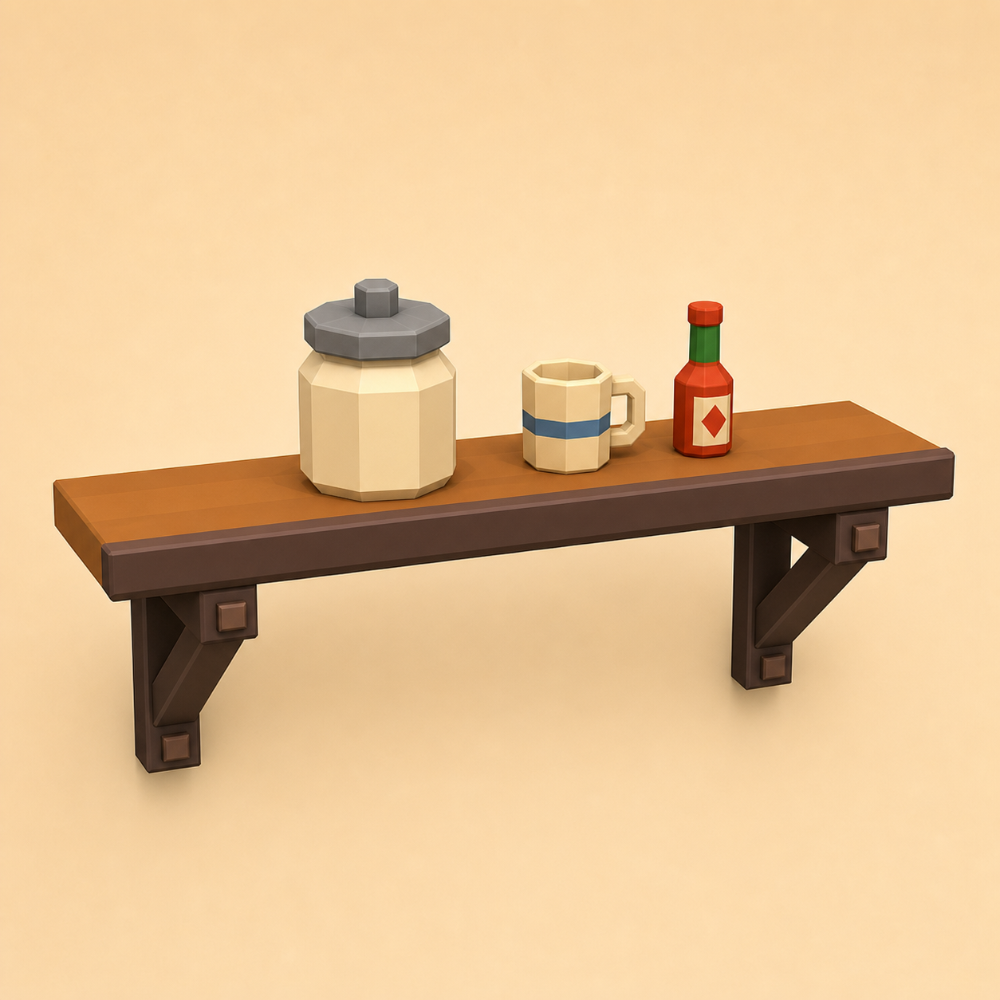

Day 14 - Week 3 modeling expansion
14Mirrored wall shelf - build one side, reflect the other
Animation can wait. Today you learn a modeling skill that makes symmetrical props faster: Mirror Modeling. You will build one bracket for a café wall shelf and let Blockbench reflect the matching bracket across the X center line.
One postable café wall shelf: a centered shelf plank, two matching mirrored brackets, and a couple of jars or cups sitting on top.

X 0, then apply it when the pair looks right.Warm up - 30-second recall
Answer first, then open the cards.
What did Duplicate do in the cooking pot lesson?
What is the difference between rotating the camera and rotating an element?
Why should symmetrical parts share the same size and color?
The one new idea - Mirror Modeling
Mirror Modeling reflects edits across the X axis. Instead of building a left shelf bracket, duplicating it, moving it, and eyeballing the opposite side, you build one bracket and let Blockbench show the mirrored partner.
The important distinction: Mirror Modeling is the live mirrored workflow. Apply Mirror Modeling turns the mirrored side into real copied geometry. The local Blockbench UI atlas lists both under the Edit menu.
Today we mirror model geometry only. Mirror Painting, animation mirroring, and advanced UV mirror cleanup can wait.
Settings tutorial - Mirror Modeling
Keep the Mirror Cheatsheet open.
| Control | Use it today for | Beginner-safe value |
|---|---|---|
| Edit > Mirror Modeling | Turn on live X-axis mirroring. | On only while building the bracket. |
| Mirror UV | Mirror texture layout on copied parts. | On for solid-color shelf pieces. |
| Apply Mirror Modeling | Make the reflected bracket real geometry. | Use after the mirrored side looks right. |
| Transform > Flip | Directly flip a selected part. | Skip today; this lesson is about Mirror Modeling. |
| Center line | The mirror plane. | Keep the shelf centered around X 0. |
Do it with me
-
New Generic Model - name it
Save early. This is a static prop for the asset pack, not an animation exercise.mirrored-wall-shelf -
Build a centered shelf plank
Add one cube namedshelf-plank. Suggested size:X 12,Y 0.6,Z 3. Keep it centered on the grid so the middle of the shelf sits onX 0. -
Add a front lip
Add a thin cube namedshelf-front-lip. Put it along the front edge of the shelf. This small lip makes the shelf read as a designed prop instead of one flat board. -
Turn on Mirror Modeling
Go to Edit > Mirror Modeling. In its options, keep Mirror UV on. From now on, watch what happens across the X center line. -
Build one vertical bracket on the right side
Add a cube namedbracket-r-vertical. Place it under the shelf at aboutX 4. Keep it narrow and dark, like a support block. A mirrored partner should appear on the opposite side. -
Add the bracket foot
Add a short horizontal cube namedbracket-r-footunder the vertical piece. The mirrored side should update automatically. If it appears too close or too far away, move the right-side original until the pair feels balanced. -
Add an optional angled brace
Add a slim cube namedbracket-r-angle, rotate it slightly, and place it between the vertical support and the shelf. The mirrored side should angle the opposite way. If this is fiddly, skip it; the vertical and foot blocks are enough. -
Apply the mirror
Select the right-side bracket pieces, then choose Edit > Apply Mirror Modeling. The mirrored bracket becomes real geometry that can be selected and edited. -
Turn Mirror Modeling off
Go back to Edit > Mirror Modeling and turn it off. This prevents the jars or cups from mirroring by accident. -
Add shelf items asymmetrically
Add one or two jars, cups, or sauce bottles on top of the shelf. Do not mirror these. A little asymmetry makes the prop feel more natural while the brackets stay perfectly matched. -
Paint with the course palette
Use warm wood for the plank, dark wood for the brackets, cream for jars, and steel grey for lids. Keep labels/text off this lesson so mirrored UVs cannot reverse letters. -
Capture the shelf
Take one 3/4 screenshot of the shelf alone, then one set shot near your chalkboard, sauce bottle, or prep counter if you have those files handy. -
Post your Day-14 update
Publish the image and a short note. Streak: Day 14.
Use Mirror Modeling for symmetrical structure. Turn it off before adding natural clutter, labels, stains, or other details that should not be identical.
itch.io post (English):
RedNote / 小红书 (中文):
Quick self-check
Say the answer first, then open the card.
Which axis does Mirror Modeling reflect across in this beginner workflow?
X 0.What is the difference between Mirror Modeling and Apply Mirror Modeling?
Why turn Mirror Modeling off before adding jars?
When should you be careful with Mirror UV?
Use the Mirror Cheatsheet. It is
grounded in the local Blockbench UI atlas entries for
Edit > Mirror Modeling and the
source file reference/blockbench-source/js/modeling/mirror_modeling.ts.
If the mirrored bracket appears in the wrong place, the center shelf duplicates, or the mirror will not apply, send me a screenshot of the Outliner and viewport. I can tell which part is selected or off-center.